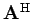

Inhalt Index DeskTop Bronstein
Lineare Algebra Matrizen Begriff der Matrix
Zu einer komplexen Matrix erhält man die adjungierte Matrix , indem man die zugehörige konjugiert komplexe Matrix transponiert: